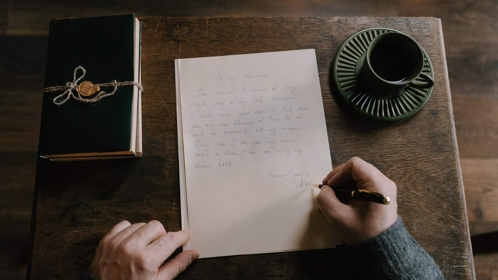

Words to Describe Someone You Love
The right word can say what a whole paragraph can't. Here are 42 of them, sorted by mood, with notes on when each one fits.

Quick Takeaways
- Pick words that fit the moment instead of reaching for the biggest compliment you know.
- Romantic words land best when they name one real quality you truly admire in them.
- Cute words keep daily chats warm, so save them for small moments that need a smile.
- Deep words carry real weight, so use them when you mean every single word you say.
- Say the word out loud first, since a word that trips your tongue will sound stiff to them.
- Pair the word with one honest detail, and a simple compliment turns into a memory.
You know exactly how you feel about them, but the right word hides just out of reach. Every compliment you try sounds either too plain or too much, and the moment slips past while you search for the perfect line. That's the gap these words to describe someone you love fill, since one honest word can say what a whole paragraph can't. You don't need fancy language. You need a word that sounds like you and fits the person in front of you.
The trouble starts when people grab the biggest words to describe someone you love and hope they fit. A grand word sounds hollow when it doesn't match a real quality you've seen, and a cute word can feel wrong in a serious moment. Most of us repeat the same two or three compliments until they lose their shine, while the person we love deserves words that still surprise them. Picking the right word takes thought, but the payoff is a line they remember.
You'll find three groups below, romantic, cute, and deep, with a short note on when each word fits best. The last section shows you how to pick the right one for the moment you're in. Keep the list close, and the next time words fail you, you'll have one ready.
Let's get into it.
Romantic Words That Carry Weight
Romantic words to describe someone you love work when they name something real you've noticed, not when they sound like a greeting card. A word like cherished lands because it says you value them deeply, and a word like radiant lands because it paints a picture she can feel. The best words to describe someone you love in this group carry warmth and weight at the same time, so save them for moments that matter. Use one at a time, and let it breathe instead of stacking three in one sentence.
These words fit dates, anniversaries, letters, and quiet talks when the mood turns tender. They can feel too heavy for a quick text on a busy Tuesday, so match the word to the weight of the moment. If you say it while looking at them, with no phone in your hand, the word gains power it can't get from a screen. A single honest word, said slowly, often says more than a long speech.
- Adored. Use it when you want them to know they're treasured above everyone else.
- Cherished. Save it for letters and anniversaries when you want the word to carry weight.
- Enchanting. Use it when their smile or their laugh pulls you in every single time.
- Devoted. Use it when you want to praise their loyalty and steady love.
- Radiant. Use it when they walk in and the whole room seems brighter.
- Beloved. Save it for vows and love letters where a classic word fits best.
- Passionate. Use it when their energy and fire are what you love most.
- Tender. Use it for quiet moments when their gentle side shows through.
- Captivating. Use it when you can't look away and you don't want to.
- Irresistible. Use it playfully when their charm keeps pulling you closer.
- Precious. Use it when you want to say they're rare and worth protecting.
- Lovely. Use it as a soft, easy compliment that fits almost any warm moment.
- Magnetic. Use it when their pull feels strong and you can't explain why.
- Soulful. Use it when their depth and feeling are what move you most.
Romantic words to describe someone you love gain power when you pair them with a small act. Saying cherished means more when you bring her coffee without being asked, and calling her radiant lands harder when you look up from your phone as she walks in. Words open the door, but the small acts behind them prove you meant every letter.
Keep one or two favorites ready for the next tender moment. The next group is lighter, made for the small everyday moments that deserve a smile.
Cute Words for Everyday Moments
Cute words keep love light and playful, and they shine in the small moments between big ones. A pet name in a morning text or a sweet word after a long day tells them you're thinking of them without making a speech of it. The best words to describe someone you love in this lighter style feel natural in your voice, so pick the ones you'd actually say out loud. If a word makes you cringe, skip it, since she'll hear the awkwardness too.
These words to describe someone you love fit texts, nicknames, inside jokes, and lazy Sundays when nothing big is happening. They lose their charm if you use them in every single sentence, so let them pop up like small gifts instead of a steady stream. A cute word works best when it surprises them a little, and it works worst when it sounds forced. Try one in a text today and watch how fast she answers.
- Sweetheart. Use it as a warm default pet name that fits texts and hellos.
- Cutie. Use it playfully when they do something small and adorable.
- Sunshine. Use it on gray mornings when they brighten your whole day.
- Sweetie. Use it in texts when you want a quick, easy touch of warmth.
- Darling. Use it for a classic, gentle pet name that never sounds dated.
- Honey. Use it in cozy moments when you want to sound soft and close.
- Lovebug. Use it when they're being extra sweet and a little bit silly.
- Pumpkin. Use it playfully in fall or any time you want a cozy nickname.
- Snugglebug. Use it on lazy evenings when you're curled up together.
- Buttercup. Use it when you want a sweet, old-style pet name with charm.
- Cupcake. Use it when they do something cute enough to earn a treat name.
- Peaches. Use it playfully when their smile feels soft and sweet.
- Bubbles. Use it when their laugh is light and their mood lifts yours.
- Sweetpea. Use it as a gentle pet name for quiet, tender moments.
Cute words to describe someone you love also work as tiny check-ins during a busy day. A quick sweetheart in a midday text tells them you're thinking of them, even when work pulls you in ten directions. Keep the pet names you both love, and retire the ones that never quite fit. The words you keep should feel like home every time you say them.
Save the sweetest ones for the moments that catch you off guard. The next group goes deeper, for the person who means everything to you.
Deep Words for Someone Who Means Everything
Deep words to describe someone you love are for the moments when cute and romantic don't reach far enough. They name the role this person plays in your life, like the calm in your storm or the home you come back to. The best words to describe someone you love at this depth carry real feeling, so don't spend them lightly or they'll lose their power. Use them when you mean every letter, and say them like you mean it.
These words fit vows, letters, hard talks, and the quiet nights when you both know something real is happening. They can feel too much on a first date or in a casual chat, so save them for the person and the moment that earned them. A deep word, said at the right time, can become a memory you both carry for years. Choose slowly, say it once, and let the silence after it do the rest.
- Anchor. Use it when they're the steady calm that holds you in rough times.
- Home. Use it when being with them feels like arriving where you belong.
- Light. Use it when they guide you through dark days and heavy moods.
- Compass. Use it when they help you find your way back to yourself.
- Haven. Use it when their arms feel like the safest place you know.
- Muse. Use it when they spark your ideas and make you want to create.
- Treasure. Use it when you want to say they're rare and worth keeping close.
- Miracle. Use it when their arrival in your life still feels like good luck.
- Blessing. Use it when you want to say you're grateful they chose you.
- Kindred. Use it when you feel like you've known them far longer than you have.
- Forever. Use it when you want to promise a love that keeps going.
- Heartbeat. Use it when their presence sets the rhythm of your days.
- Soulmate. Use it when no other word fits the bond you share.
- Everything. Use it when they mean so much that one word can't hold it all.
A deep word also needs the right setting to land well. When the moment lands, build one with the ship name generator and turn your two names into a word that's yours alone. Saying anchor over a noisy lunch can feel flat, while saying it on a quiet walk at dusk can stop them in their tracks. Choose a calm moment, look them in the eye, and let the word sit for a beat before you say more. Silence after a deep word isn't empty. It lets the meaning sink in.
Hold these words for the moments that truly deserve them. The last section shows you how to pick the right word every time.
How to Pick the Right Word for the Moment
Start with the moment, not the word. If you want the exact shades of a word before you use it, the Merriam-Webster entry for love shows how many meanings one small word can carry. A busy morning calls for something short and warm, while a quiet anniversary dinner calls for a word with weight. The best words to describe someone you love fit the hour you're in, and the fastest test is to say the word out loud before you send it. If it sounds like you, keep it. If it sounds like a stranger wrote it, pick another one.
Think about what you actually admire in them right now. Is it their laugh, their patience, their courage, or the way they make a dull day brighter? Name that one quality, then pick the word that matches it, and the compliment writes itself. A word tied to a real detail always beats a grand word tied to nothing, and it shows you were paying attention.
Keep a short list of favorite words to describe someone you love on your phone, three romantic, three cute, and three deep, so you're never stuck staring at a blank screen. Rotate them so no word wears out, and retire any word that starts to feel routine. Your words will stay fresh, and the person you love will keep hearing something new.
Pick one word from this list today and use it before the day ends. You've got the words now, so let's wrap up with a simple plan for using them well.
We've walked you through romantic, cute, and deep words, plus a simple way to pick the right one for any moment. You now have a clear picture of how words to describe someone you love work best: one real quality, one honest word, and timing that fits the mood. The right word doesn't need to be fancy. It needs to be true.
Pick three words to describe someone you love from this list, one from each group, and use one today. Say it out loud first, tie it to something real you noticed, and watch how they answer. If their face lights up, you've found a keeper. If it falls flat, try a lighter word next time.
If this list helped you find the word you were hunting for, share it with a friend who keeps saying "you know what I mean" instead of saying it. They'll thank you the next time the right word shows up right on time.
Frequently Asked Questions
What is the most romantic word to describe someone you love?
What cute words can I call my girlfriend?
How do I describe someone I love in one word?
What deep words describe true love?
Can I use these words in a text?
Keep reading
Funny, Cute, and Romantic Ship Name Ideas
Playful blends for every kind of couple.
FictionHow to Create Ship Names for Fictional Characters
Name your favorite pairings the way fandoms do.
GuidesCommon Mistakes When Creating Couple Names
The traps that make a blend sound clumsy, and how to avoid every one of them.
GuidesHow to Choose a Couple Social Media Handle
Pick a shared handle that still feels like you.
IdeasHow to Find a Baby Name Using Ship Names
Turn two names into baby name ideas you'll love.
How-ToHow to Make the Perfect Ship Name
Six proven methods for blending two names into one.